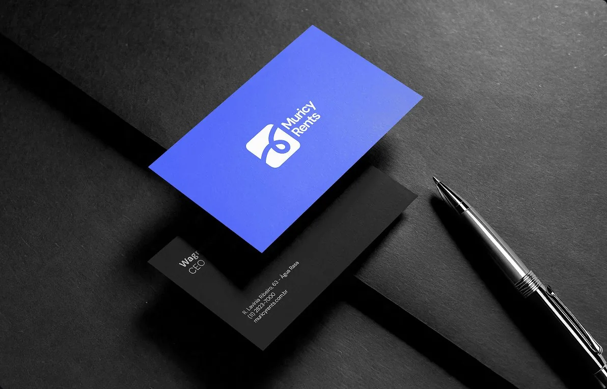
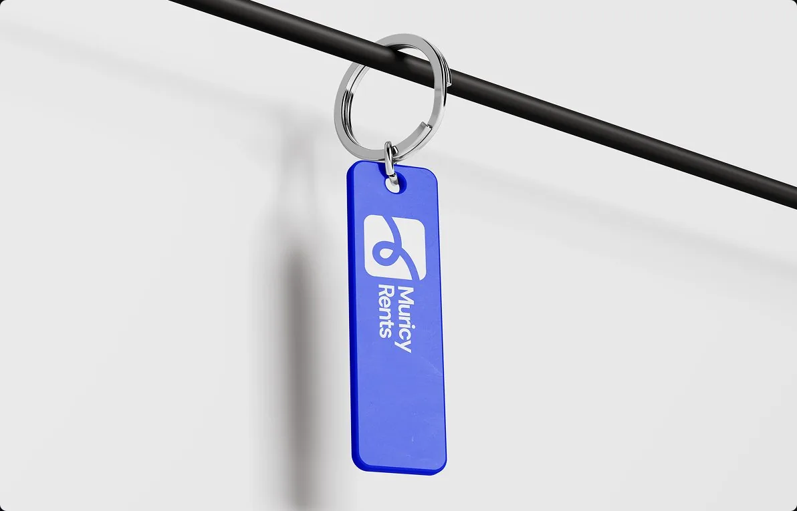
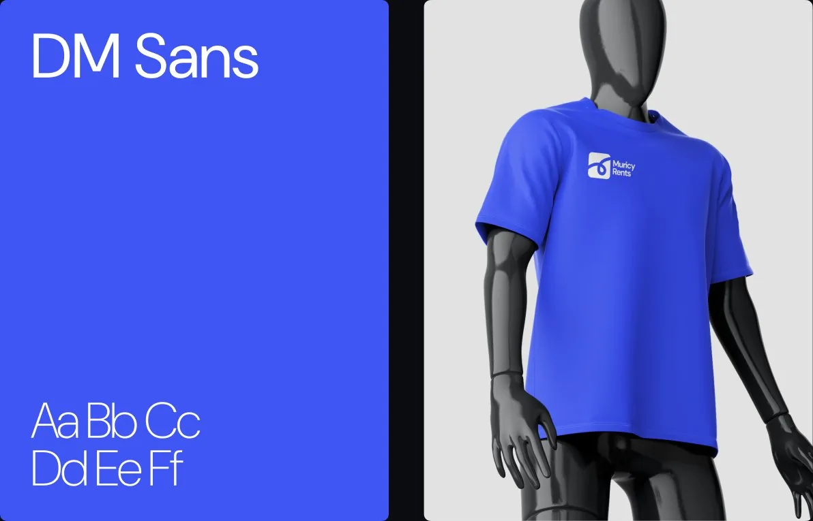
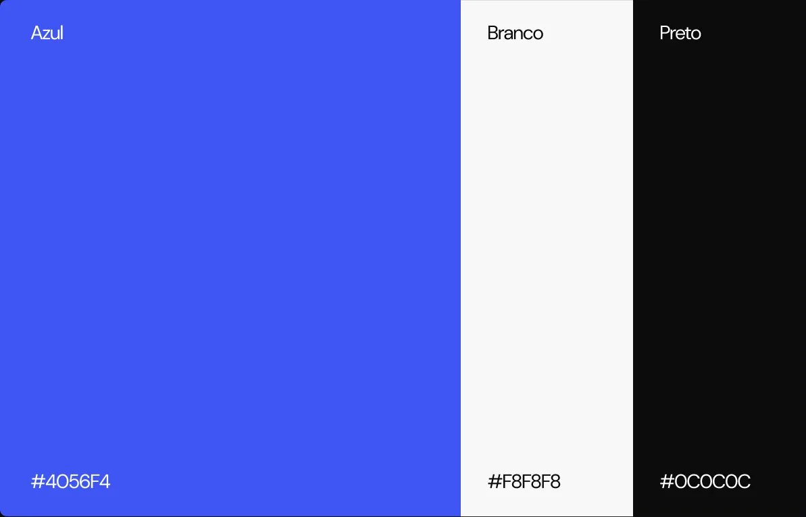
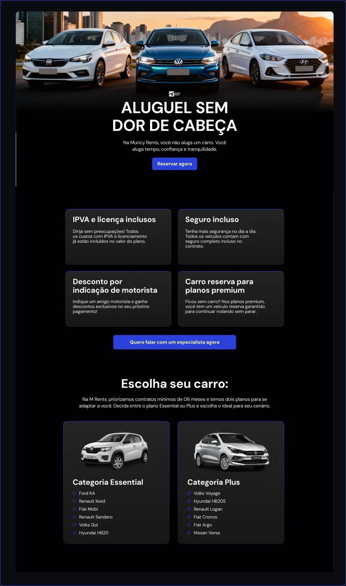
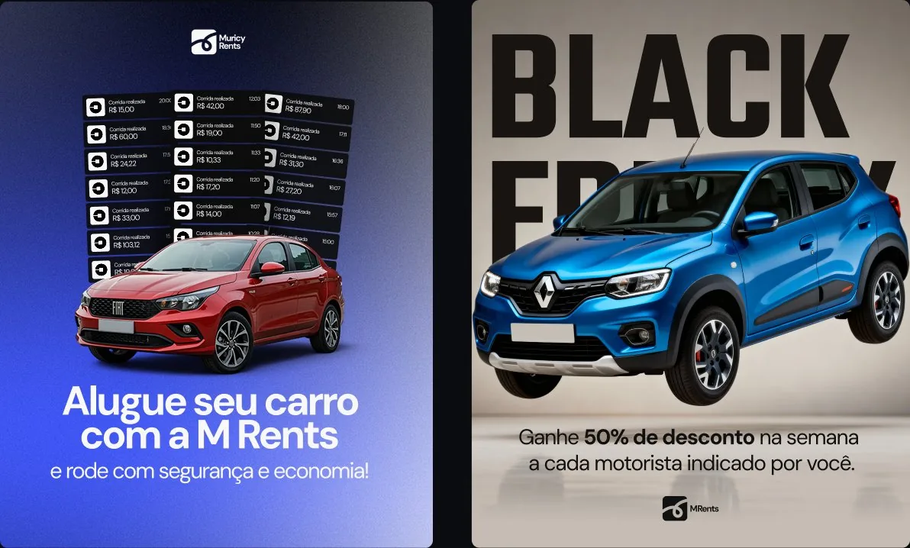
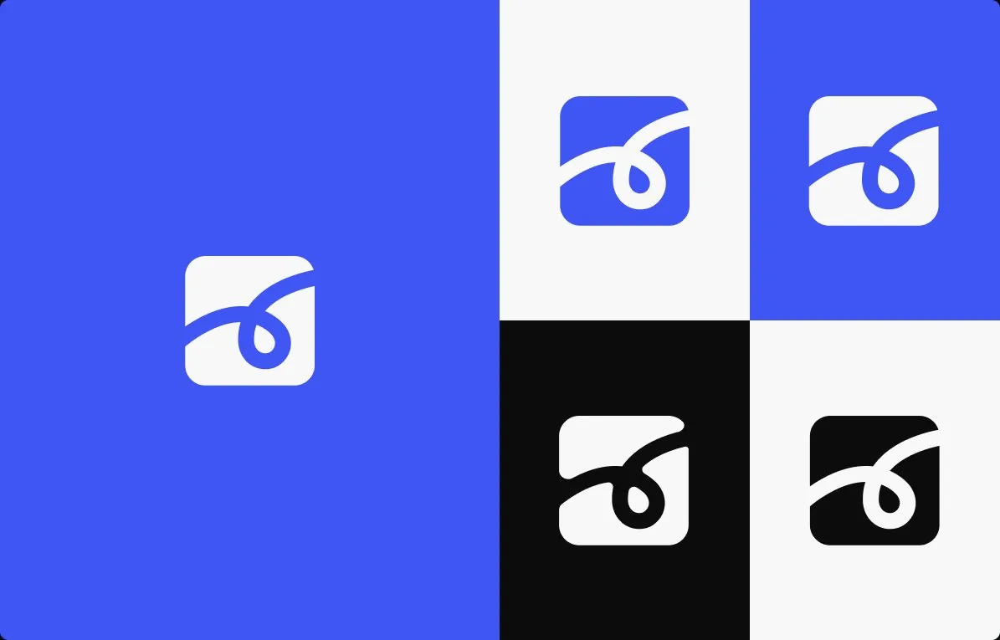
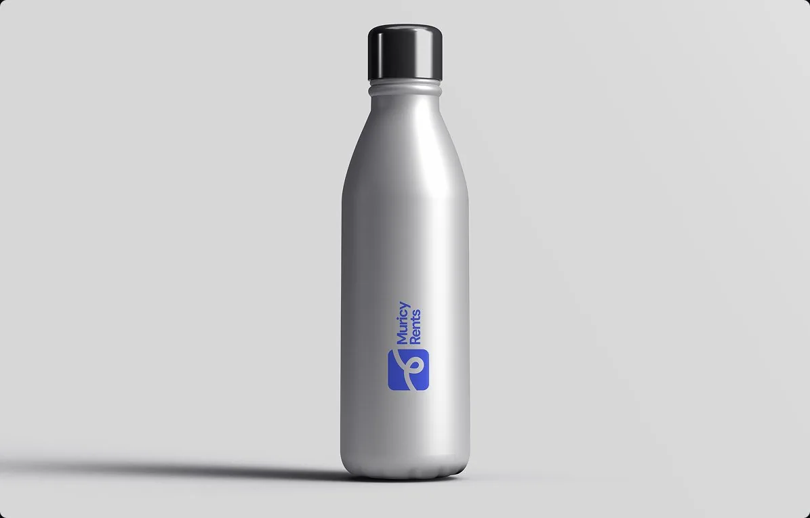
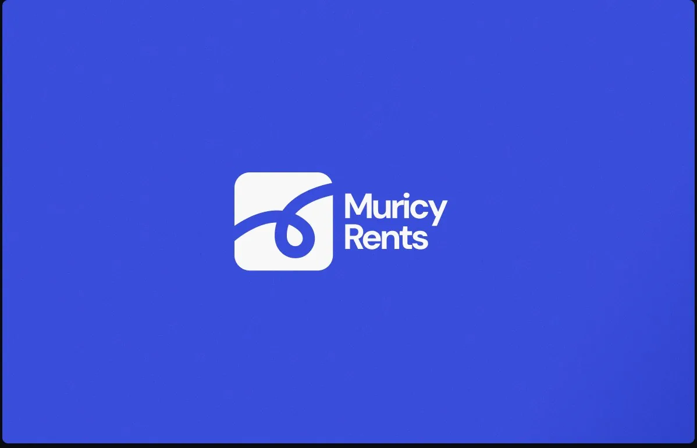

Identidade Visual Muricy Rents
Sobre a empresa
A Muricy Rents, atualmente MRents, é uma empresa de locação de veículos especializada em motoristas de aplicativo.
Seu negócio está baseado em oferecer aos drivers uma solução prática para trabalhar com seus próprios horários e transformar um veículo alugado em uma ferramenta de geração de renda.
Desafio
O principal desafio era construir uma identidade visual do zero que transmitisse dois atributos essenciais da marca: exclusividade e facilidade.
A identidade precisava fugir da estética tradicional de locadoras e, ao mesmo tempo, conversar diretamente com um público que busca praticidade, confiança e uma solução acessível para trabalhar como motorista de aplicativo.
A partir desse posicionamento, desenvolvi uma identidade que pudesse funcionar não apenas como marca, mas como um sistema visual completo.
Workflow
- Desenvolvimento da identidade visual e seus principais elementos;
- Construção do sistema visual no Figma;
- Desdobramento da identidade para redes sociais;
- Aplicação da identidade na landing page da empresa;
- Desenvolvimento de materiais impressos utilizados diariamente pelos drivers.
O resultado foi uma identidade visual consistente e versátil, capaz de manter a mesma percepção de marca em diferentes pontos de contato, do digital aos materiais utilizados na operação.








